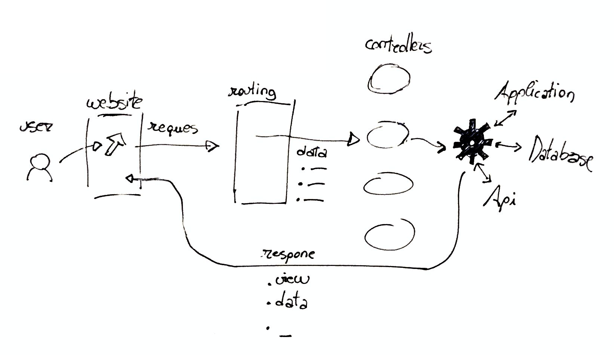

Basically, Laravel takes user request and return a response. 
To run Laravel, you need to have:
To install composer, download it:
php -r "copy('https://getcomposer.org/installer', 'composer-setup.php');"
php -r "if (hash_file('sha384', 'composer-setup.php') === 'e0012edf3e80b6978849f5eff0d4b4e4c79ff1609dd1e613307e16318854d24ae64f26d17af3ef0bf7cfb710ca74755a') { echo 'Installer verified'; } else { echo 'Installer corrupt'; unlink('composer-setup.php'); } echo PHP_EOL;"
php composer-setup.php
php -r "unlink('composer-setup.php');"
and then install it globally:
mv composer.phar /usr/local/bin/composer
First, you need to install Laravel globally on your machine. The installation process depends from your operating system.
composer global require laravel/installer
Once you have Laravel installed, you can start a new project running:
laravel new project
The Laravel Installer will create a folder called project and put inside everything you need.
You can see your projet working by running:
php artisan serve
Normally, you can see your website opening a brower and visiting:
To running project in local, you have two options in Laravel:
Homestead in a complex tool that will use Vagrant for creating a virtual machine that can run Laravel.
For most projects, this is a too complex and unnecessary complicated.
Valet is avaiable only for Mac Os. Basically, Valet with map all the folders in a choosen folder to a project_folder_name.test url, always avaiable.